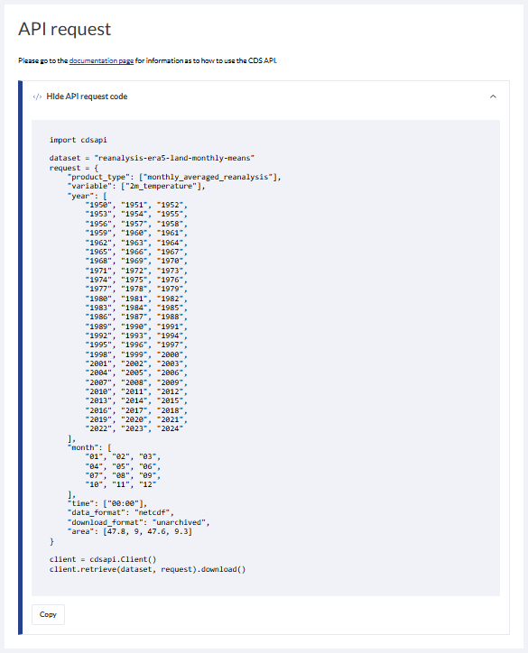
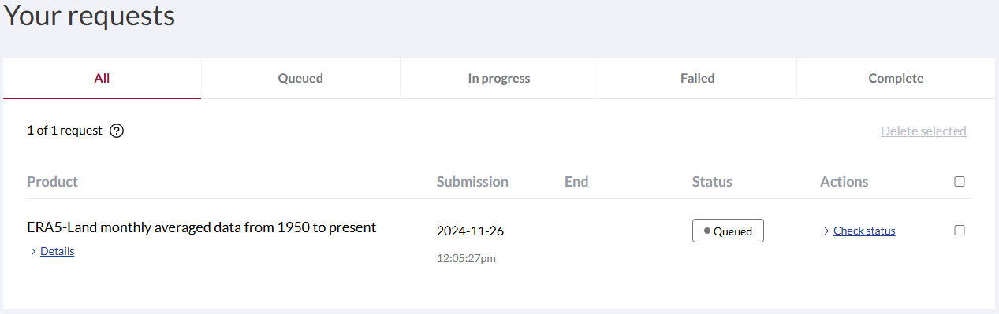

Download Your First Dataset
ERA5-Land is a high-resolution reanalysis dataset that provides a consistent and detailed view of land variables over several decades, combining model data with atmospheric forcings from ERA5 to ensure accuracy. By correcting input variables for elevation differences and leveraging indirect observational forcings, it provides improved precision for land surface applications such as flood and drought forecasting. Despite some inherent uncertainties, ERA5-Land is a valuable resource for decision-making and environmental analysis due to its comprehensive temporal and spatial resolution.
Dataset: Climate Indicator Europe from 1940 to 2100
• Data source: Climate Indicator Europe
• Documentation
1. Specifying the paths and working directories
Specifying paths and working directories in Jupyter Notebook is essential for ensuring the notebook correctly accesses and saves files, enabling seamless data loading, script execution, and result storage. It eliminates confusion over file locations, reducing errors and making the code more portable and reproducible across different systems.
import os
# ---- Specify directories below ----
download_folder = r".\data\era5-land-monthly\download" # Folder for downloaded data
# ---- End of user inputs ----
# Create directories if they do not exist
os.makedirs(download_folder, exist_ok=True)
2. Filter and Download Dataset
This section demonstrates how to download a test dataset from ERA5-Land Monthly Averaged Data using the CDS API. The dataset focuses on variables from the “Temperature” group. The process is divided into three steps:
Authentication: Replace
api_keywith your Personal Access Token from the CDS website. This step ensures secure access to the dataset.API Request Definition: Specify the desired dataset and variables on the CDS download page. Include these parameters in your API request to filter and customize the data retrieval.
Execute API Request and Download: Submit the API request and download the dataset based on the defined parameters, ensuring you retrieve only the relevant data.
2.1 Authentication
To access the ERA5-Land Monthly Averaged Data, authentication is required. Follow these steps:
Obtain your Personal Access Token from the Copernicus Climate Data Store (CDS).
Replace the placeholder
api_keyin your code with the token you generated.
import cdsapi
def main():
"""
Initialize the CDS API client with the specified API key and URL.
Ensure your credentials are valid and replace 'api_key' with your personal access token.
"""
# Replace with your actual API key and URL
api_key = "fdae60fd-35d4-436f-825c-c63fedab94a4"
api_url = "https://cds.climate.copernicus.eu/api"
# Initialize the CDS API client
client = cdsapi.Client(url=api_url, key=api_key)
print("CDS API client initialized successfully.")
return client
2.2 API Request Definition
Follow these steps to define your API request for downloading data from ERA-5 Land Monthly:
Open this link in your browser: ERA-5 Land Monthly.
Ensure that you are logged into your CDS account.
Configure the request fields as follows:
Product type: “Monthly averaged reanalysis”
Variable: “2m temperature”
Year: Click on “Select all”
Month: Click on “Select all
Time: “00:00”
Geographical area: Choose “Sub-region extraction” and use the following coordinates:
Direction
Value
North
47.8
West
9.0
East
9.3
South
47.6
Data format: “NetCDF4 (Experimental)”
Download format: “Unarchieved (not zipped if single file)”
Finally, accept the Terms of use to proceed.
After completing Step 2, your API request should resemble the following:
Copy the API request: Use the provided dataset and request fields for the next step by copying the generated code.
Important: Large datasets result in longer queue and processing times. To optimize, apply filters that are specific to your use case.
2.3 Execute API Request and Download
To download the dataset, follow these steps:
Replace the placeholders for dataset and request parameters in the code cell below with the values generated from your API request in the previous step.
Ensure the request parameters match the configuration you defined earlier (e.g., product type, variables, years, months, etc.).
Run the cell to execute the API request and download the dataset.
# Define the dataset and request parameters
dataset = "reanalysis-era5-land-monthly-means"
request = {
"product_type": ["monthly_averaged_reanalysis"],
"variable": ["2m_temperature"],
"year": [
"1950", "1951", "1952",
"1953", "1954", "1955",
"1956", "1957", "1958",
"1959", "1960", "1961",
"1962", "1963", "1964",
"1965", "1966", "1967",
"1968", "1969", "1970",
"1971", "1972", "1973",
"1974", "1975", "1976",
"1977", "1978", "1979",
"1980", "1981", "1982",
"1983", "1984", "1985",
"1986", "1987", "1988",
"1989", "1990", "1991",
"1992", "1993", "1994",
"1995", "1996", "1997",
"1998", "1999", "2000",
"2001", "2002", "2003",
"2004", "2005", "2006",
"2007", "2008", "2009",
"2010", "2011", "2012",
"2013", "2014", "2015",
"2016", "2017", "2018",
"2019", "2020", "2021",
"2022", "2023", "2024"
],
"month": [
"01", "02", "03",
"04", "05", "06",
"07", "08", "09",
"10", "11", "12"
],
"time": ["00:00"],
"data_format": "netcdf",
"download_format": "unarchived",
"area": [47.8, 9, 47.6, 9.3]
}
# Uncomment and run this cell to download the dataset
# This dataset takes approximately 3 minutes to proceess and additional 1 minute to download
# Filesize: 99.2kb
def main_retrieve():
# This request downloads year 1950 to 2024 data, monthly averaged at 00:00
dataset_filename = f"{dataset}_test_data.nc"
dataset_filepath = os.path.join(download_folder, dataset_filename)
# Download the dataset only if the dataset has not been downloaded before
if not os.path.isfile(dataset_filepath):
# Download the dataset with the defined request parameters
client.retrieve(dataset, request, dataset_filepath)
else:
print("Dataset already downloaded.")
if __name__ == "__main__":
client = main()
main_retrieve()
2025-01-17 14:51:09,522 INFO [2024-09-28T00:00:00] **Welcome to the New Climate Data Store (CDS)!** This new system is in its early days of full operations and still undergoing enhancements and fine tuning. Some disruptions are to be expected. Your
[feedback](https://jira.ecmwf.int/plugins/servlet/desk/portal/1/create/202) is key to improve the user experience on the new CDS for the benefit of everyone. Thank you.
2025-01-17 14:51:09,522 INFO [2024-09-26T00:00:00] Watch our [Forum](https://forum.ecmwf.int/) for Announcements, news and other discussed topics.
2025-01-17 14:51:09,522 INFO [2024-09-16T00:00:00] Remember that you need to have an ECMWF account to use the new CDS. **Your old CDS credentials will not work in new CDS!**
2025-01-17 14:51:09,524 WARNING [2024-06-16T00:00:00] CDS API syntax is changed and some keys or parameter names may have also changed. To avoid requests failing, please use the "Show API request code" tool on the dataset Download Form to check you are using the correct syntax for your API request.
CDS API client initialized successfully.
Dataset already downloaded.
While the code is running, you can monitor the status of your API requests by visiting the Your requests section on the CDS Request page.
This section provides detailed information about the progress, queue status, and completion of your requests.
